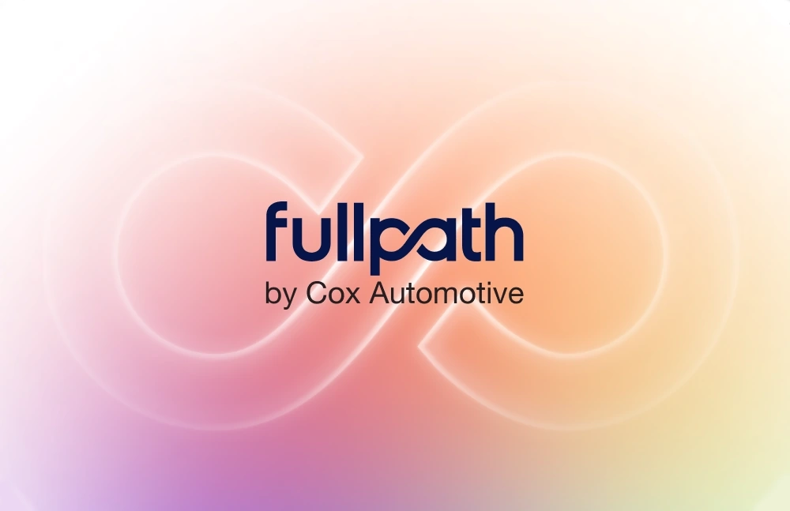
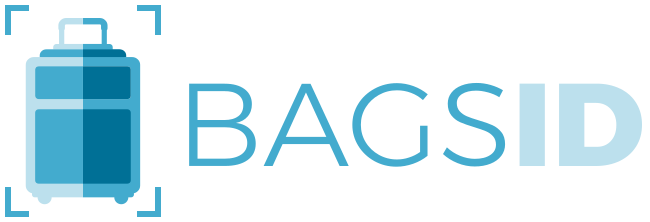

Enterprise software
Cox Automotive
CRM UX-Lite +16.5 points and BERT survey scores +27% on average; now above primary competitors.
- +16.5 UX-Lite points
- +27% BERT
- +900 AI Communications dealerships

Product design / Systems / Brand
UX architecture and interface design for products generating over $500 million in annual revenue.
ExploreSelected engagements
Product interfaces, design systems, architecture, workflow diagrams, websites, and marketing — brought together in the original case studies.
CRM UX-Lite +16.5 points and BERT survey scores +27% on average; now above primary competitors.

Onboarded 750 dealerships to a combined CDP + CRM experience, bringing customer intelligence into everyday workflows.

Created the brand, coded the design system, and built initial interfaces demonstrated in real baggage operations.
Designed and delivered both product front ends, connecting AI administration and lending operations through one shared system.
Enterprise tools and digital experiences for complex healthcare operations.


Interfaces, websites, and brand work across healthcare, trades, hospitality, and equipment hire.
Beneath the interface